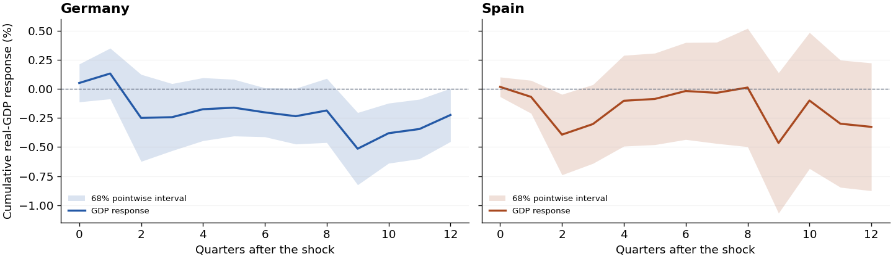

Resmî makro veriyle, doğrulanmış ekonometrik yöntemleri tarayıcıda çalıştıran açık kaynak araç.
One-page case study · existing template
One ECB shock. How do Spain and Germany’s GDP responses differ?
Question & data
How does real GDP respond in Spain and Germany to the same identified tightening innovation? I ran MacroLab’s existing Same ECB shock country-comparison template with a common country window. The fixed October 2026 snapshot supplies OECD real GDP and unemployment, ECB prices and deposit facility rate (DFR), EIA Brent and the IMF non-fuel commodity index. No new observations or estimator were added.
Where the shock comes from
MacroLab generates it from a recursive euro-area VAR(2), ordered real GDP → prices → unemployment → DFR. This assumes the preceding real variables do not react within the quarter to the policy innovation, while policy may react to them. It is an internally estimated residual, not a high-frequency market-surprise series. One positive identified standard deviation raises DFR on impact by 0.197 percentage points (about 19.66 bp).
Method & result
The existing lag-augmented country local projections use two base lags, HC1 inference, oil/commodity controls, seasonal controls and COVID dummies. Responses are cumulative changes in log real GDP, expressed in percent. Both countries use the same 92 LP origin quarters, 2000 Q3–2023 Q2, at horizons 0–12.

| Quarters after shock | Country | GDP response | 68% interval |
|---|---|---|---|
| 4 | Germany | -0.174% | [-0.445%, +0.097%] |
| 4 | Spain | -0.101% | [-0.492%, +0.290%] |
| 8 | Germany | -0.185% | [-0.461%, +0.091%] |
| 8 | Spain | +0.013% | [-0.497%, +0.523%] |
Germany’s point estimate is more negative at four and eight quarters. All four intervals in the table contain zero. The template provides no Spain-minus-Germany confidence interval or equality test; these estimates do not establish a statistically significant cross-country difference. Overlap of separate bands is not such a test.
Limit
This is a descriptive comparison conditional on one recursively identified DFR shock. The VAR uses 1999 Q3–2026 Q2; common LP origins end earlier because twelve future quarters are needed. Final-vintage data, the recursive ordering, the negative-rate period without a shadow rate, and bands omitting shock-estimation uncertainty limit interpretation. A different sample or shock measure could change the result.
Sources: ECB DFR · ECB SA HICP · OECD QNA / labour data · EIA Brent · IMF commodities. Estimates & provenance · Exact existing-template configuration